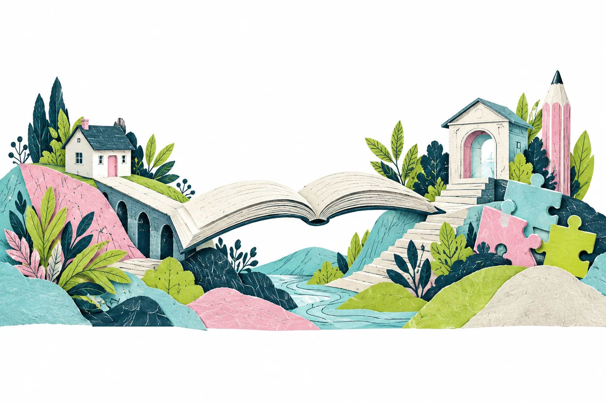

Planificar la semana
La familia distribuye el trabajo según su rutina y las fechas establecidas para las actividades.
HOMESCHOOL ACOMPAÑADO / ALAF
La familia organiza el tiempo de estudio con recursos y orientación del colegio. Hay fechas tope para entregar actividades y presentar evaluaciones.

EL DÍA A DÍA
La flexibilidad permite distribuir el tiempo en casa. Las actividades, las entregas y la evaluación dan continuidad al programa.
La familia distribuye el trabajo según su rutina y las fechas establecidas para las actividades.
El estudiante utiliza los materiales y recursos educativos digitales de ALAF.
ALAF ofrece supervisión del trabajo y orientación para padres durante el proceso.
El programa establece fechas tope para actividades y evaluaciones. La flexibilidad mantiene compromisos académicos.
PARA ORGANIZARTE
Antes de elegir Homeschool, revisa cuánto tiempo puede dedicar la familia a organizar y acompañar el estudio.
DUDAS SOBRE EL PROGRAMA
La familia puede organizar el tiempo de estudio, con fechas tope de entrega y evaluación. Consulta el calendario de actividades para planificar el trabajo.
ALAF ofrece recursos, tutorías y orientación para padres. Pide información sobre cómo se inicia el programa y cómo se coordina el acompañamiento.
La familia participa en la organización y el estudio. ALAF aporta recursos, orientación y supervisión; consulta las responsabilidades específicas del programa.
Sí. La propuesta de ALAF incluye diagnósticos, proyectos, rúbricas y reportes. Solicita la organización de entregas y evaluaciones del grado que necesitas.
COMPARA LA OTRA OPCIÓN
Clases en vivo de lunes a jueves, con docentes, compañeros y un horario según la etapa del estudiante.

ADMISIONES ALAF
Indica el grado, modalidad y calendario. Admisiones te comparte horarios, costos y requisitos.